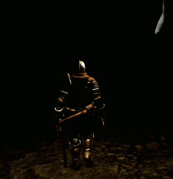
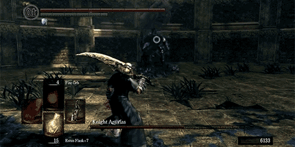

Introduction
Dark Souls is an ARPG (action role-playing game) developed by FromSoftware and published by Namco Bandai Games on September 22, 2011 for Playstation 3 and Xbox 360. Later, in 2012, it would also receive a PC release. The game is for all intents and purposes the child of lead director Hidetaka Miyazaki whose vision and artistic genius in the Souls series have been endlessly lauded. Dark Souls is the first game in the series, followed up by DS2 and DS3, and (set in another universe) BloodBorne.
Gameplay
The game is played in third-person in a world in which players are encouraged to explore, even though this often means ending up in bad situations:
|  |
| Nope |
The game is known for its punishing gameplay: both proficiency at mechanics of the game as well as the lack of knowledge of the game world can lead to death. And in this game death truly is punishing; one loses their “souls” which can be used to level up, meaning that one effectively loses potential levels. This coupled with a taunting death screen which reads "you died" definitely provokes anger in most beginners; this, however, is only fuel and motivation for the player to keep going and beat the game.
 |
| You died |
When a game is deemed souls-like it usually refers to the combat system being similar to Dark Souls: the combat is dynamic, meaning that the player must take into account what the opponent is doing and react accordingly; this also all happens in real-time meaning the battles get very heated. The player has many tools in his arsenal such as magic, weapon attacks, dodges, parries, and rolls.
|  |
| An example of a well-timed roll to dodge an attack |
The Dark Souls style of combat has managed to spawn many clones simply by its virtue of being very rewarding, giving players a sense of achievement for vanquishing a foe.
Success
Upon its release Dark Souls immediately became a cult classic, having both successes domestically in Japan as well as in the west. It was received well by most critics, the only criticisms being the difficulty of the game, and after years had gone by it would be hailed as one of the best games of all time. Due to its success, the game would later receive two sequels that have only built upon the initial success, creating genuinely great games. It has given rise to many imitators who seek to replicate the atmosphere and combat of the game, some of whom have come quite close.
Legacy
Dark souls can be considered as one of the most influential games of its generation, having left a legacy that few would be able to match and still continuing to inspire game creators to this day, such as those of The Surge, The Witcher, God of War, and Destiny. The game is often considered to be too difficult, however, this is the reason for its success; the satisfaction of overcoming the struggle of beating enemies in the game is what keeps players coming back. This as well as other elements of its design philosophy have truly come to influence the way games are thought of and designed.